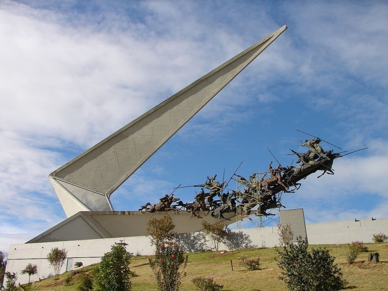

Paisaje representativo de Paipa, Boyacá
Introducción
Paipa es uno de los destinos más emblemáticos de Boyacá, reconocido por sus aguas termales, su importancia histórica y sus paisajes naturales. Este municipio ofrece una combinación única de cultura, gastronomía y turismo, atrayendo a visitantes de todo el país y del extranjero.